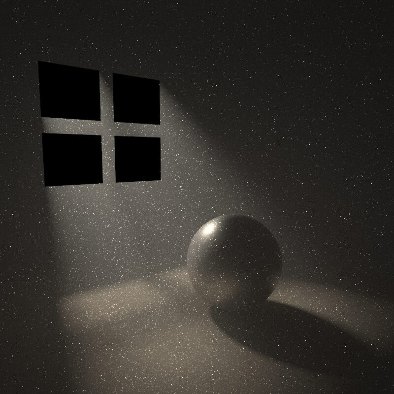
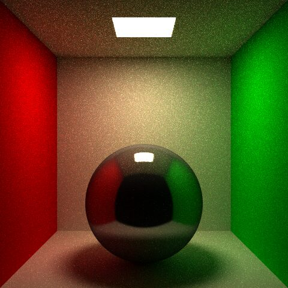
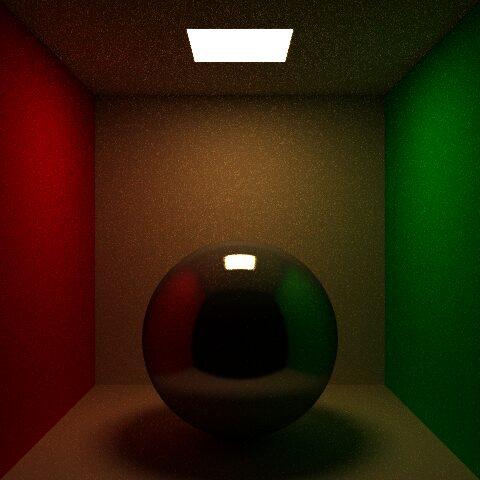
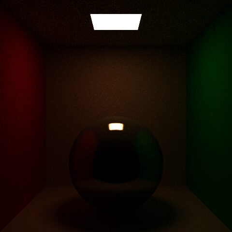
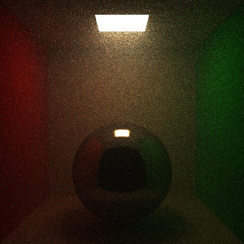
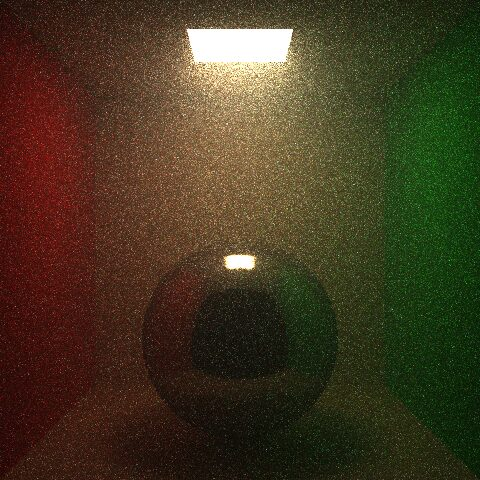

Work / Volumetric Path Tracing
Volumetric Path Tracing
A physically based renderer I wrote over a quarter, extended to support participating media: fog, haze, and the light shafts they produce.
- Course
- CSE 168, Computer Graphics II: Rendering, UC San Diego
- When
- March to June 2026
- Language
- C++ with OpenMP, scene generation in Python
- Final render
- 800 × 800 pixels, 4096 samples per pixel

The base renderer
The volumetric work sits on top of a path tracer built from scratch:
- a BVH for acceleration and an iterative integrator in
pathTrace() - next event estimation and multiple importance sampling (power heuristic) in
shadeMIS() - Russian roulette termination, cosine and BRDF importance sampling
- Phong and GGX microfacet BRDFs through
evalBRDF()
Media are handled at each bounce rather than in a separate integrator, and the absorption-only path is kept as a fallback when σs = 0, so every surface-only scene still renders identically.
Implementation
- A
Mediumstruct holds absorption, scattering and the Henyey-Greenstein asymmetry g; one homogeneous medium covers the whole scene. transmittance(d, sc)is evaluated per colour channel, so coloured fog works, and both NEE and BRDF samples are attenuated along their light segments.- Each bounce samples a free-flight distance from the mean extinction across channels. If it lands before the surface hit, the next vertex is a scattering event in the medium.
- Sampling with a scalar extinction but attenuating per channel would bias the result, so scatter and surface vertices carry an exact correction weight. The estimator stays unbiased for coloured media.
hgPhase()andsampleHG()give closed-form evaluation and inverse-CDF sampling. Because the sampling is exact, the phase value doubles as the pdf for MIS.shadeMISVolume()mirrors the surface direct-lighting estimator with the phase function in place of the BRDF, and shadow rays pick up transmittance.- The path then continues along a direction sampled from HG; the pdf cancels against the phase function, so throughput only carries the vertex weight from step 4.
Absorption
Same Cornell box, same settings, only the medium changes. Blue is absorbed most and red least, so the fog pushes the image warm, and surfaces farther from the camera dim with depth.



In-scattering
Adding scattering produces the glow below the light: light redirected toward the camera in mid air, which absorption alone cannot produce. Forward scattering keeps that light travelling roughly in its original direction, so the glow is brighter and more directional.


The hero scene
A dark room, a four-pane window, and a small, very bright light about 25 units outside it. Shaft sharpness comes from the angular size of the source: a large close light gives every shadow edge a huge penumbra, so small and far away, with intensity scaled by distance squared, keeps the window mullions crisp inside the beam.
The detail I like most is the long dark streak behind the sphere. It is the sphere's shadow through the fog: nothing behind it receives direct light, so there is no in-scattering, and the darkness is visible in mid air.
Noise and limitations
Small bright lights in fog produce fireflies: rare paths that connect to the light with a tiny pdf. Going from 1024 to 4096 samples per pixel reduced the speckle without removing it. Clamping radiance would hide it but adds bias, and I chose to keep the estimator unbiased.
Media are homogeneous and global. Heterogeneous media with delta and ratio tracking was a stretch goal; the time went into MIS correctness and the hero scene instead. Source code is available on request.